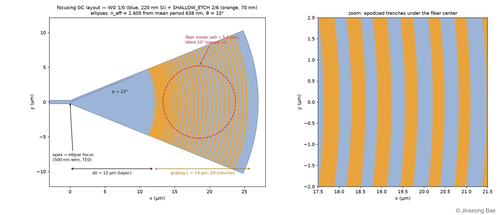
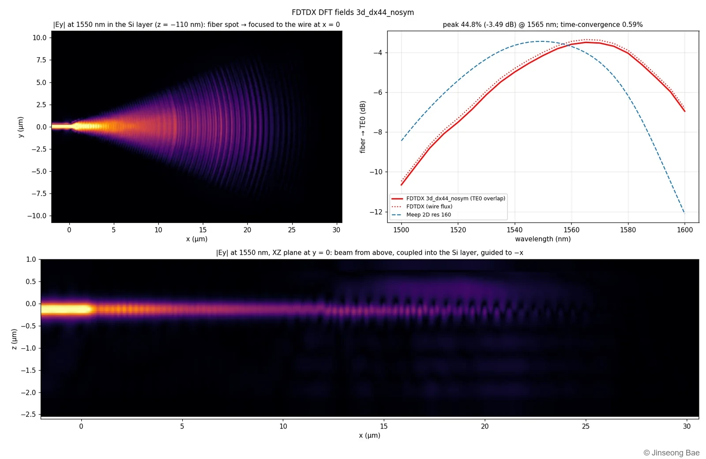
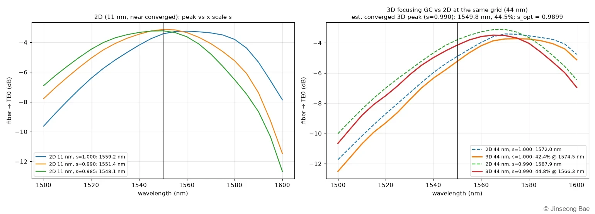

문제와 동기
그레이팅 커플러는 위에서 비스듬히 들어오는 광섬유 모드를 칩 안 도파로 모드로 바꿉니다. 주기와 채움률 두 변수만 조절하는 균일 그레이팅은 빔 모양이 맞지 않아 효율에 상한이 있습니다. 앞서 두 변수만 최적화한 예제에서는 약 26 %가 한계였습니다.
그래서 식각 패턴 전체를 변수로 두는 토폴로지 역설계로 넓혔습니다. 70 nm 얕은 식각 한 번이면 마스크 하나로 만들 수 있는 구조입니다. 초기값을 정답 근처에 두지 않고 균일한 회색에서 시작해, 최적화가 무엇을 찾아내는지 보려 했습니다.
시뮬레이션 설정
| 솔버 | Meep 2D (x–z 단면), MPI 6 프로세스 |
|---|---|
| 층 구조 | Si 220 nm (n 3.45) / BOX SiO₂ 2 µm (n 1.45) / Si 기판, 위는 공기. PML 1 µm |
| 설계 영역 | 윗면 70 nm 식각층, 길이 14 µm, 1D 밀도 701픽셀 (20 nm) |
| 광원 | 가우시안 빔, 법선에서 10°, 빔 허리 5.2 µm, Si 표면에 초점 |
| 모니터 | 도파로 쪽 x = −2 µm에서 TE0 고유 모드 계수 |
| 목적함수 | 1530·1550·1570 nm에서 TE0 결합 효율(|α|² / 입사 파워)의 평균 |
| 해상도 | 최적화 40 px/µm, 평가 100·160 px/µm |
방법
- 밀도 표현ρ(x) ∈ [0, 1], 0이면 식각, 1이면 실리콘. 중간값은 두 유전율 사이 값으로 계산해 미분할 수 있게 합니다.
- 필터와 투영반경 100 nm conic 필터로 너무 작은 요소를 막고, tanh 투영의 β를 8 → 16 → 32 → 64로 올려 회색을 0/1로 몰아갑니다.
- adjoint 기울기한 번의 forward와 한 번의 adjoint 계산으로 701개 픽셀의 기울기를 모두 얻습니다.
- 업데이트NLopt MMA로 단계별 15 / 10 / 10 / 10회, 총 45회, 54분.
- 후처리100 nm보다 작은 돌기 2개를 지우고(최소 tooth 100 nm, trench 140 nm), 피크가 1550 nm에 오도록 x 방향 배율을 조정했습니다.
설계가 자라는 과정
처음 세 번의 반복에서는 효율이 거의 0입니다. 균일한 회색 슬랩은 빛을 결합하지 못하기 때문입니다. 네 번째부터 기울기를 따라 주기 구조가 나타나며 효율이 급히 오릅니다. β가 커질 때마다 잠깐 떨어졌다 회복하면서 회색이 사라집니다.


최적화가 찾은 구조는 도파로 쪽에서 실리콘 tooth가 가늘고(100 nm) 갈수록 굵어지며(340 nm), trench는 반대로 540 → 300 nm로 좁아집니다. 빔의 가우시안 모양에 맞춰 산란 세기를 점점 키우는, 교과서적인 apodization입니다.
결과

해상도에 따른 효율 (날카로운 경계로 다시 계산)
| res 25 | 32.0 % @ 1522.5 nm |
|---|---|
| res 45 | 36.3 % @ 1527.5 nm |
| res 100 | 43.5 % @ 1542.5 nm |
| res 160 | 45.3 % @ 1550 nm, 1 dB 대역폭 37.5 nm |
최적화 중 MaterialGrid 표현으로 잰 res 100 값은 49.2 %였습니다. 같은 해상도에서 날카로운 경계로 다시 계산하면 43.5 %라서, 49 %는 결과로 쓰지 않습니다. 그 사이에 50 nm짜리 trench 하나도 제거됐기 때문에, 차이 전부를 표현 방식 탓으로 단정하지는 않습니다.
GDS와 3D 검증
1D 패턴을 공초점 타원 모양의 focusing 그레이팅 커플러(반각 22°, 테이퍼 12 µm, 500 nm 도파로)로 바꿔 GDS를 만들었습니다. 층은 WG 1/0, SHALLOW_ETCH 2/6입니다.


3D는 FDTDX(JAX)로 GDS를 그대로 읽어 대칭 없이 전체 영역을 계산했습니다(격자 44 nm, 773 × 522 × 113, 1 ps, subpixel smoothing). 같은 44 nm 격자의 2D와 비교한 3D 손실은 약 −0.3 dB입니다.




44 nm 격자는 70 nm 식각을 1.6칸으로만 표현해서, 최종 3D 값은 3D(44 nm) 결과에 2D 11 nm 대비 44 nm 차이를 더한 추정치 44.5 % @ 1549.8 nm(−3.51 dB)로 적습니다.
검증
- 기울기 검사: res 40, β 8, ρ = 0.5에서 세 방향(기울기 부호, 무작위, 6.1 µm 위치 bump)의 방향 미분을 유한차분(h = 0.02)과 비교해 오차 1.42 / 2.32 / 0.41 %.
- 해상도: res 160까지도 효율이 오르고 피크가 적색으로 이동해, 완전히 수렴하지 않았습니다.
- 솔버 간: FDTDX 2D와 Meep 2D 사이에 약 2–3 %p, 10 nm 차이가 남아 있고 원인은 밝히지 못했습니다.
한계와 주장하지 않는 것
주장하는 것
- 균일한 회색에서 출발한 adjoint 최적화가 주기와 apodization을 스스로 찾았다
- 날카로운 경계 2D 45.3 %, 3D 추정 44.5 %로 균일 그레이팅보다 약 3 dB 높다
주장하지 않는 것
- 최적화는 2D TE에서만 했다. 3D 역설계는 하지 않았다
- 44.5 %는 측정값이 아니라 외삽 추정이며 3D는 한 격자 크기뿐이다
- 공정 오차 강건성, 반사, seed 비교는 없고, 제작하지 않았다
코드 구성
gc2d/gc2d_adjoint.py— 2D 최적화 (-mode opt | gradcheck | plot)gc2d/evaluate_gc2d.py,clean_design.py,stretch_design.py— 평가와 후처리gc3d/make_gds.py— focusing GC GDSgc3d/fdtdx/gc_fdtdx.py,analyze_align.py— 3D 검증과 1550 nm 정렬
2D 최적화는 개인 PC WSL, 3D 검증은 Colab A100에서 실행했습니다. 2026년 9월 27일 – 10월 14일 작업입니다.